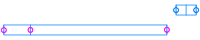
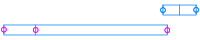

| Adenylylsulfate_reductase_subunit_alpha | | 4.430 | 4.39e-229 | 4.53e-226 |
| Flagellin | | -2.720 | 2.34e-223 | 1.20e-220 |
| Cation_efflux_system_protein_CusA | | -4.900 | 1.74e-185 | 5.99e-183 |
| Succinate--CoA_ligase__ADP-forming__subunit_beta | | 1.350 | 1.91e-118 | 4.93e-116 |
| Sulfite_reductase__ferredoxin_ | | 5.200 | 7.82e-116 | 1.61e-113 |
| Cobalt-zinc-cadmium_resistance_protein_CzcC | | -3.500 | 1.15e-103 | 1.98e-101 |
| B-type_flagellar_hook-associated_protein_2 | | -2.550 | 1.66e-103 | 2.45e-101 |
| Flagellar_biosynthesis_protein_FlhF | | -3.890 | 7.19e-102 | 9.26e-100 |
| Flagellar_hook-associated_protein_1 | | -2.450 | 5.83e-92 | 6.67e-90 |
| Signal_transduction_histidine-protein_kinase_AtoS | | -3.270 | 5.89e-83 | 6.07e-81 |
| Sulfate_adenylyltransferase | | 2.050 | 3.91e-80 | 3.66e-78 |
| putative_ATP_synthase_YscN | | -3.500 | 3.72e-76 | 3.20e-74 |
| Flagellar_hook_protein_FlgE | | -2.430 | 2.91e-74 | 2.31e-72 |
| Flagellum_site-determining_protein_YlxH | | -3.860 | 3.12e-71 | 2.30e-69 |
| Cation_efflux_system_protein_CusB | | -1.300 | 1.66e-69 | 1.14e-67 |
| Acylphosphatase | | 0.874 | 1.79e-67 | 1.15e-65 |
| Flagellar_biosynthesis_protein_FlhA | | -3.740 | 1.28e-66 | 7.77e-65 |
| Ribonuclease_3 | | 0.790 | 5.12e-65 | 2.93e-63 |
| Flagellar_M-ring_protein |  | -2.770 | 1.04e-59 | 5.64e-58 |
| Trans-aconitate_2-methyltransferase |  | -1.040 | 3.95e-54 | 2.04e-52 |
| 30S_ribosomal_protein_S12 | | 1.190 | 3.83e-51 | 1.88e-49 |
| Elongation_factor_Tu | | 1.210 | 9.92e-50 | 4.65e-48 |
| Chemotaxis_protein_CheA | | -1.460 | 2.79e-48 | 1.25e-46 |
| Flagellar_P-ring_protein |  | -2.560 | 7.12e-47 | 3.06e-45 |
| Cellulose_synthase_catalytic_subunit__UDP-forming_ | | -2.200 | 3.14e-46 | 1.30e-44 |
| A-adding_tRNA_nucleotidyltransferase | | -2.230 | 1.55e-45 | 6.14e-44 |
| RNA_polymerase-binding_transcription_factor_DksA | | 0.718 | 2.10e-45 | 8.00e-44 |
| putative_signaling_protein | | -2.700 | 1.16e-44 | 4.26e-43 |
| 3D-_3-2C5_4_-trihydroxycyclohexane-1-2C2-dione_hydrolase | | -0.958 | 1.46e-43 | 5.18e-42 |
| Putative_multidrug_resistance_protein_MdtD | | -0.980 | 2.91e-41 | 1.00e-39 |
| Flagellar_basal-body_rod_protein_FlgG | | -2.850 | 3.26e-41 | 1.09e-39 |
| Serine_threonine-protein_kinase_PknD | | 1.200 | 2.78e-40 | 8.95e-39 |
| Ketol-acid_reductoisomerase__NADP_+__ | | -1.130 | 4.33e-40 | 1.35e-38 |
| Thiosulfate_dehydrogenase | | -1.950 | 1.26e-39 | 3.81e-38 |
| Sec-independent_protein_translocase_protein_TatA | | -1.190 | 7.58e-39 | 2.23e-37 |
| ATP_synthase_subunit_b | | 1.430 | 1.80e-38 | 5.16e-37 |
| Adenylylsulfate_reductase_subunit_beta | | 4.480 | 6.90e-38 | 1.92e-36 |
| Delta-aminolevulinic_acid_dehydratase | | -1.630 | 9.50e-37 | 2.58e-35 |
| UDP-3-O-acylglucosamine_N-acyltransferase | | 1.100 | 4.01e-36 | 1.06e-34 |
| ATP_synthase_subunit_alpha | | 0.784 | 1.47e-34 | 3.78e-33 |
| Flagellar_biosynthetic_protein_FlhB | | -4.110 | 7.29e-34 | 1.83e-32 |
| IS256_family_transposase_ISAfe2 | | -2.120 | 5.98e-33 | 1.47e-31 |
| Beta-carbonic_anhydrase_1 | | -0.882 | 3.12e-32 | 7.47e-31 |
| Protein-glutamate_methylesterase_protein-glutamine_glutaminase | | -1.880 | 8.68e-32 | 2.03e-30 |
| RNA_polymerase_sigma_factor_FliA | | -3.500 | 3.77e-31 | 8.65e-30 |
| Flagellar_secretion_chaperone_FliS | | -2.840 | 4.65e-31 | 1.04e-29 |
| Chemotaxis_protein_PomA |  | -1.910 | 1.50e-30 | 3.29e-29 |
| Pup--protein_ligase | | -0.576 | 1.61e-30 | 3.46e-29 |
| GTP-binding_protein_TypA_BipA_ | | 0.559 | 1.94e-30 | 4.09e-29 |
| ATP_synthase_subunit_a | | 1.030 | 3.55e-30 | 7.33e-29 |
| Chemotaxis_protein_methyltransferase | | -3.070 | 6.68e-30 | 1.35e-28 |
| Succinate--CoA_ligase__GDP-forming__subunit_beta | | 1.150 | 7.31e-30 | 1.45e-28 |
| Ycf48-like_protein | | 0.821 | 2.27e-29 | 4.41e-28 |
| L-ectoine_synthase | | 2.960 | 3.09e-29 | 5.90e-28 |
| Flagellar_assembly_factor_FliW |  | -1.810 | 3.21e-29 | 6.01e-28 |
| Flagellar_hook-basal_body_complex_protein_FliE | | -3.010 | 4.35e-27 | 8.00e-26 |
| Membrane_protein_insertase_YidC | | 0.889 | 1.10e-26 | 1.99e-25 |
| Putative_phosphoribosyl_transferase | | -0.962 | 1.80e-26 | 3.20e-25 |
| Linearmycin_resistance_ATP-binding_protein_LnrL | | 2.030 | 3.17e-26 | 5.54e-25 |
| Malate_dehydrogenase |  | 0.498 | 5.80e-26 | 9.96e-25 |
| Modulator_of_FtsH_protease_YccA | | -0.795 | 8.53e-26 | 1.44e-24 |
| Depupylase | | -0.786 | 1.87e-25 | 3.11e-24 |
| Type_II_secretion_system_protein_F | | -0.998 | 8.89e-25 | 1.45e-23 |
| Tyrosine_recombinase_XerC | | -0.396 | 2.83e-24 | 4.56e-23 |
| S-adenosylmethionine_synthase | | 0.873 | 3.30e-24 | 5.24e-23 |
| Methylenetetrahydrofolate--tRNA-_uracil-5-_-methyltransferase_TrmFO | | -1.020 | 9.37e-24 | 1.46e-22 |
| HTH-type_transcriptional_regulator_BetI | | -1.520 | 1.02e-23 | 1.56e-22 |
| ATP_synthase_subunit_beta_1 | | 0.750 | 4.00e-23 | 6.07e-22 |
| RNA_polymerase_sigma_factor_RpoS | | 0.538 | 1.14e-21 | 1.70e-20 |
| Flagellar_motor_switch_protein_FliG | | -2.440 | 1.88e-21 | 2.77e-20 |
| GTPase_Obg | | 0.872 | 6.20e-21 | 9.01e-20 |
| UDP-3-O-acyl-N-acetylglucosamine_deacetylase |  | -0.762 | 6.66e-21 | 9.54e-20 |
| Outer_membrane_protein_assembly_factor_BamB | | -1.020 | 7.09e-21 | 1.00e-19 |
| Biotin_carboxyl_carrier_protein_of_acetyl-CoA_carboxylase | | 0.826 | 7.86e-21 | 1.10e-19 |
| Perchlorate_reductase_subunit_gamma | | -1.470 | 9.79e-21 | 1.35e-19 |
| UDP-glucose_6-dehydrogenase | | 0.472 | 2.94e-20 | 3.98e-19 |
| Chromosome_partitioning_protein_ParA | | 0.712 | 7.86e-20 | 1.05e-18 |
| Cytochrome_c_biogenesis_protein_CcsB | | 0.326 | 9.05e-20 | 1.20e-18 |
| Peptide_chain_release_factor_1 | | 0.519 | 4.65e-18 | 6.07e-17 |
| General_stress_protein_CTC | | 0.483 | 7.49e-18 | 9.65e-17 |
| 30S_ribosomal_protein_S13 |  | 1.120 | 9.59e-18 | 1.22e-16 |
| Fatty_acid_resistance_protein_FarB | | -0.992 | 1.58e-17 | 1.99e-16 |
| Transcription_termination_factor_Rho | | 0.402 | 2.11e-17 | 2.62e-16 |
| 30S_ribosomal_protein_S5 | | 0.855 | 2.37e-17 | 2.91e-16 |
| Threonine_synthase | | 0.528 | 2.65e-17 | 3.22e-16 |
| Periplasmic_oligopeptide-binding_protein | | 0.577 | 1.04e-16 | 1.25e-15 |
| putative_multidrug_resistance_protein_EmrK | | -0.801 | 3.72e-16 | 4.41e-15 |
| N-acetylneuraminate_epimerase | | -1.050 | 5.30e-16 | 6.21e-15 |
| Flagellar_biosynthetic_protein_FliR | | -3.120 | 5.45e-16 | 6.32e-15 |
| Amidophosphoribosyltransferase | | -0.582 | 6.15e-16 | 7.04e-15 |
| Peroxiredoxin | | -0.981 | 7.80e-16 | 8.83e-15 |
| HTH-type_transcriptional_regulator_ZntR | | -1.310 | 1.21e-15 | 1.36e-14 |
| Tol-Pal_system_protein_TolQ | | 0.638 | 1.30e-15 | 1.45e-14 |
| Putative_HTH-type_transcriptional_regulator_YwnA | | -0.909 | 1.72e-15 | 1.89e-14 |
| 30S_ribosomal_protein_S2 | | 0.452 | 2.39e-15 | 2.59e-14 |
| p-hydroxybenzoic_acid_efflux_pump_subunit_AaeB | | -0.807 | 3.22e-15 | 3.46e-14 |
| Beta_sliding_clamp | | -0.754 | 3.80e-15 | 4.04e-14 |
| IS1595_family_transposase_ISLsp6 | | -1.110 | 4.08e-15 | 4.29e-14 |
| Ribosomal_protein_S12_methylthiotransferase_RimO | | 0.531 | 4.52e-15 | 4.70e-14 |
| Ferredoxin--NADP_reductase | | 0.762 | 4.63e-15 | 4.78e-14 |
| Adenosylhomocysteinase | | 0.753 | 4.69e-15 | 4.78e-14 |
| Histidinol_dehydrogenase | | 0.484 | 6.46e-15 | 6.53e-14 |
| dTDP-4-dehydrorhamnose_reductase | | 0.818 | 1.05e-14 | 1.05e-13 |
| L-2-2C4-diaminobutyric_acid_acetyltransferase | | 1.640 | 1.27e-14 | 1.25e-13 |
| Outer_membrane_protein_TolC | | -1.300 | 1.53e-14 | 1.51e-13 |
| Inorganic_pyrophosphatase | | 0.519 | 1.96e-14 | 1.90e-13 |
| 10_kDa_chaperonin_1 | | -0.862 | 3.72e-14 | 3.58e-13 |
| ATP_synthase_subunit_delta | | 0.948 | 6.99e-14 | 6.68e-13 |
| Ferrous_iron_permease_EfeU | | -0.737 | 9.42e-14 | 8.91e-13 |
| Ectoine_dioxygenase | | 2.070 | 1.01e-13 | 9.50e-13 |
| Formamidopyrimidine-DNA_glycosylase | | -0.887 | 1.04e-13 | 9.70e-13 |
| DNA_repair_protein_RecN |  | 0.457 | 1.33e-13 | 1.22e-12 |
| UDP-N-acetylglucosamine_1-carboxyvinyltransferase | | 0.866 | 1.57e-13 | 1.43e-12 |
| Ribose-phosphate_pyrophosphokinase | | 0.627 | 1.63e-13 | 1.48e-12 |
| Inositol-1-monophosphatase | | 0.581 | 2.08e-13 | 1.86e-12 |
| Ubiquinone_menaquinone_biosynthesis_C-methyltransferase_UbiE | | -0.563 | 2.34e-13 | 2.08e-12 |
| Lipopolysaccharide_export_system_ATP-binding_protein_LptB | | 0.473 | 3.33e-13 | 2.94e-12 |
| NAD_P_H-quinone_oxidoreductase_subunit_J-2C_chloroplastic | | 0.598 | 3.96e-13 | 3.46e-12 |
| Alkaline_phosphatase_synthesis_transcriptional_regulatory_protein_PhoP | | 0.668 | 4.18e-13 | 3.62e-12 |
| L-carnitine_dehydrogenase | | -0.610 | 7.68e-13 | 6.60e-12 |
| Anhydro-N-acetylmuramic_acid_kinase | | -0.493 | 9.38e-13 | 7.99e-12 |
| 50S_ribosomal_protein_L29 | | 1.010 | 1.94e-12 | 1.64e-11 |
| Spore_protein_SP21 | | -2.920 | 2.31e-12 | 1.93e-11 |
| Phosphatidylserine_decarboxylase_proenzyme | | -1.150 | 2.33e-12 | 1.93e-11 |
| Exodeoxyribonuclease_10 | | -1.150 | 2.77e-12 | 2.28e-11 |
| Cytochrome_b6 | | 0.910 | 3.02e-12 | 2.47e-11 |
| Cell_shape-determining_protein_MreB | | 0.645 | 3.28e-12 | 2.66e-11 |
| Sulfur_carrier_protein_adenylyltransferase | | 0.532 | 3.95e-12 | 3.18e-11 |
| Ribosome-recycling_factor | | 0.634 | 4.63e-12 | 3.70e-11 |
| Release_factor_glutamine_methyltransferase | | 0.807 | 4.73e-12 | 3.75e-11 |
| Endonuclease_4 | | 0.932 | 6.28e-12 | 4.94e-11 |
| Chemotaxis_protein_CheW | | -0.922 | 1.06e-11 | 8.29e-11 |
| GTP_pyrophosphokinase | | -0.285 | 1.32e-11 | 1.02e-10 |
| Putative_signal_peptide_peptidase_SppA | | 0.726 | 1.52e-11 | 1.17e-10 |
| Sec-independent_protein_translocase_protein_TatC | | -0.885 | 1.64e-11 | 1.25e-10 |
| IS5_family_transposase_ISLru1 | | -1.700 | 1.74e-11 | 1.32e-10 |
| 1-deoxy-D-xylulose-5-phosphate_synthase | | -0.431 | 1.75e-11 | 1.32e-10 |
| NADH-quinone_oxidoreductase_subunit_H | | 0.431 | 2.61e-11 | 1.95e-10 |
| UDP-N-acetylglucosamine_4-epimerase |  | -0.832 | 3.14e-11 | 2.33e-10 |
| IS200_IS605_family_transposase_ISTel3 | | 0.729 | 6.35e-11 | 4.67e-10 |
| Ribulose-phosphate_3-epimerase | | -0.653 | 9.41e-11 | 6.88e-10 |
| Ditrans-2Cpolycis-undecaprenyl-diphosphate_synthase___2E-2C6E_-farnesyl-diphosphate_specific_ | | -0.897 | 1.05e-10 | 7.63e-10 |
| Cytochrome_c551_peroxidase | | 0.578 | 1.45e-10 | 1.04e-09 |
| putative_ABC_transporter_ATP-binding_protein | | -0.793 | 1.55e-10 | 1.11e-09 |
| Tryptophan_2-C-methyltransferase | | -0.598 | 1.60e-10 | 1.13e-09 |
| Heme_chaperone_HemW | | -0.611 | 1.70e-10 | 1.20e-09 |
| 3-hydroxyacyl-_acyl-carrier-protein__dehydratase_FabZ | | 0.663 | 1.90e-10 | 1.33e-09 |
| UDP-glucose_4-epimerase | | -0.484 | 2.01e-10 | 1.40e-09 |
| ATP_synthase_subunit_c-2C_sodium_ion_specific | | 1.140 | 2.94e-10 | 2.03e-09 |
| Cyclic_di-GMP_phosphodiesterase_response_regulator_RpfG | | -0.450 | 3.13e-10 | 2.15e-09 |
| 50S_ribosomal_protein_L15 | | 0.586 | 3.18e-10 | 2.17e-09 |
| Lipid_A_export_ATP-binding_permease_protein_MsbA | | 0.482 | 3.98e-10 | 2.70e-09 |
| Chemotaxis_protein_CheY | | -1.030 | 4.12e-10 | 2.77e-09 |
| Isocitrate_dehydrogenase__NADP_ | | 0.609 | 4.30e-10 | 2.88e-09 |
| tRNA_uridine_5-carboxymethylaminomethyl_modification_enzyme_MnmG | | -0.450 | 4.74e-10 | 3.15e-09 |
| Response_regulator_ArlR | | 0.546 | 5.44e-10 | 3.60e-09 |
| Lipoprotein-releasing_system_ATP-binding_protein_LolD | | 0.891 | 7.13e-10 | 4.68e-09 |
| Ribonuclease_BN | | 0.556 | 7.59e-10 | 4.95e-09 |
| N-acetyl-gamma-glutamyl-phosphate_reductase | | 0.725 | 7.91e-10 | 5.13e-09 |
| ATP-dependent_DNA_helicase_Rep | | -0.682 | 8.56e-10 | 5.52e-09 |
| Ribonuclease_VapC44 | | -0.756 | 9.74e-10 | 6.24e-09 |
| Histidine_biosynthesis_bifunctional_protein_HisIE | | 0.818 | 1.16e-09 | 7.35e-09 |
| Ribosomal_large_subunit_pseudouridine_synthase_D | | -0.460 | 1.30e-09 | 8.19e-09 |
| Ammonia_channel |  | -1.220 | 1.35e-09 | 8.44e-09 |
| DNA_primase |  | 0.430 | 1.35e-09 | 8.44e-09 |
| Bifunctional_homocysteine_S-methyltransferase_5-2C10-methylenetetrahydrofolate_reductase | | -0.521 | 1.48e-09 | 9.22e-09 |
| HTH-type_transcriptional_activator_RhaS | | -0.850 | 1.89e-09 | 1.17e-08 |
| Alkyl_hydroperoxide_reductase_C | | 0.661 | 1.92e-09 | 1.18e-08 |
| Motility_protein_B | | -1.560 | 2.05e-09 | 1.25e-08 |
| Lipoprotein_signal_peptidase | | -1.160 | 2.41e-09 | 1.46e-08 |
| putative_multidrug_ABC_transporter_permease_YbhS | | -0.911 | 2.51e-09 | 1.51e-08 |
| Glutamine-dependent_NAD_+__synthetase | | -0.465 | 2.70e-09 | 1.62e-08 |
| 50S_ribosomal_protein_L7_L12 | | 0.731 | 2.79e-09 | 1.67e-08 |
| NADH-quinone_oxidoreductase_subunit_L | | 0.703 | 3.01e-09 | 1.78e-08 |
| Glutathione-specific_gamma-glutamylcyclotransferase | | 0.886 | 3.53e-09 | 2.08e-08 |
| 50S_ribosomal_protein_L11 | | 0.701 | 4.32e-09 | 2.53e-08 |
| ISAzo13_family_transposase_ISLsp4 | | -0.577 | 4.51e-09 | 2.63e-08 |
| Beta-barrel_assembly-enhancing_protease | | -0.285 | 4.57e-09 | 2.65e-08 |
| UDP-N-acetyl-D-glucosamine_6-dehydrogenase | | -2.660 | 4.68e-09 | 2.70e-08 |
| Dephospho-CoA_kinase | | 0.581 | 4.86e-09 | 2.78e-08 |
| Dihydropteroate_synthase | | -0.559 | 5.12e-09 | 2.92e-08 |
| Arginine_biosynthesis_bifunctional_protein_ArgJ | | 0.644 | 7.56e-09 | 4.28e-08 |
| Sirohydrochlorin_cobaltochelatase | | -0.459 | 7.97e-09 | 4.49e-08 |
| 5-2C6-dimethylbenzimidazole_synthase | | -0.528 | 9.29e-09 | 5.21e-08 |
| Aurachin_B_dehydrogenase | | 0.193 | 1.37e-08 | 7.65e-08 |
| Glucokinase | | 0.632 | 1.57e-08 | 8.72e-08 |
| Hydroxyacylglutathione_hydrolase | | -0.501 | 1.61e-08 | 8.89e-08 |
| 3-isopropylmalate_dehydratase_large_subunit | | 0.879 | 1.70e-08 | 9.31e-08 |
| IS256_family_transposase_ISTdr1 |  | 0.718 | 1.80e-08 | 9.80e-08 |
| tRNA_Ile_-lysidine_synthase | | -0.549 | 2.30e-08 | 1.25e-07 |
| Diaminobutyrate--2-oxoglutarate_transaminase |  | 2.180 | 2.32e-08 | 1.25e-07 |
| AP-4-A_phosphorylase | | -0.849 | 2.44e-08 | 1.31e-07 |
| putative_glycine_dehydrogenase__decarboxylating__subunit_2 | | -0.486 | 2.54e-08 | 1.35e-07 |
| Pantothenate_synthetase | | -0.890 | 2.61e-08 | 1.39e-07 |
| IS3_family_transposase_ISVpa4 |  | 0.875 | 2.73e-08 | 1.44e-07 |
| Sensory_regulatory_protein_RpfC | | -0.609 | 2.84e-08 | 1.49e-07 |
| ATP_synthase_gamma_chain | | 0.759 | 3.13e-08 | 1.64e-07 |
| Ammonium_transporter | | 0.761 | 3.42e-08 | 1.78e-07 |
| Serine_threonine-protein_phosphatase_1 | | -0.583 | 3.43e-08 | 1.78e-07 |
| Rubrerythrin | | 0.460 | 3.51e-08 | 1.81e-07 |
| NAD_P_H-quinone_oxidoreductase_subunit_3 | | -0.406 | 3.81e-08 | 1.96e-07 |
| NADH-quinone_oxidoreductase_subunit_K | | 1.060 | 3.95e-08 | 2.01e-07 |
| 50S_ribosomal_protein_L9 | | 0.613 | 3.96e-08 | 2.01e-07 |
| 1-2C4-alpha-glucan_branching_enzyme | | 0.481 | 4.04e-08 | 2.04e-07 |
| Single-stranded_DNA-binding_protein | | 0.580 | 4.61e-08 | 2.32e-07 |
| Glutamyl-tRNA_reductase | | 0.462 | 5.47e-08 | 2.74e-07 |
| Inner_membrane_transport_protein_YajR | | 0.264 | 5.84e-08 | 2.91e-07 |
| DNA_mismatch_repair_protein_MutL | | -0.598 | 5.93e-08 | 2.94e-07 |
| dTDP-glucose_4-2C6-dehydratase_2 | | 0.491 | 6.05e-08 | 2.98e-07 |
| 6-carboxy-5-2C6-2C7-2C8-tetrahydropterin_synthase | | -0.596 | 7.34e-08 | 3.60e-07 |
| Chorismate_synthase | | 0.352 | 7.75e-08 | 3.79e-07 |
| ECF_RNA_polymerase_sigma_factor_SigE | | -0.892 | 8.01e-08 | 3.90e-07 |
| Ferredoxin-2C_2Fe-2S | | -0.614 | 8.06e-08 | 3.90e-07 |
| Peptide_chain_release_factor_2 | | 0.396 | 8.09e-08 | 3.90e-07 |
| Squalene--hopene_cyclase | | -0.219 | 8.89e-08 | 4.26e-07 |
| Cobyrinate_a-2Cc-diamide_synthase | | 0.416 | 1.17e-07 | 5.59e-07 |
| Protein_translocase_subunit_SecD |  | 0.540 | 1.31e-07 | 6.21e-07 |
| Tol-Pal_system_protein_TolB | | -0.393 | 1.32e-07 | 6.25e-07 |
| Phosphoenolpyruvate_synthase | | 0.460 | 1.34e-07 | 6.32e-07 |
| Signal_peptidase_IB | | 0.893 | 1.37e-07 | 6.43e-07 |
| Aminomethyltransferase | | -0.274 | 1.55e-07 | 7.23e-07 |
| 30S_ribosomal_protein_S3 | | 0.719 | 1.56e-07 | 7.25e-07 |
| 50S_ribosomal_protein_L27 | | 0.597 | 1.63e-07 | 7.54e-07 |
| Lon_protease_1 | | 0.462 | 1.85e-07 | 8.51e-07 |
| Trehalose-phosphate_phosphatase | | 0.582 | 2.05e-07 | 9.39e-07 |
| Succinate--CoA_ligase__ADP-forming__subunit_alpha | | 0.560 | 2.19e-07 | 9.99e-07 |
| Endoribonuclease_YbeY | | 0.847 | 2.22e-07 | 1.01e-06 |
| Diaminopimelate_epimerase | | 0.570 | 2.56e-07 | 1.16e-06 |
| Galactose-1-phosphate_uridylyltransferase | | 0.436 | 2.79e-07 | 1.26e-06 |
| 2-_hydroxymethyl_glutarate_dehydrogenase | | -0.511 | 2.90e-07 | 1.30e-06 |
| Bifunctional_NAD_P_H-hydrate_repair_enzyme_Nnr | | -0.392 | 2.91e-07 | 1.30e-06 |
| Ferredoxin | | 0.272 | 3.21e-07 | 1.43e-06 |
| 6-phosphogluconate_dehydrogenase-2C_NAD_+_-dependent-2C_decarboxylating | | 1.120 | 3.66e-07 | 1.62e-06 |
| Transcriptional_activator_HlyU | | -1.590 | 3.81e-07 | 1.68e-06 |
| Ribonuclease_R | | -0.263 | 3.98e-07 | 1.74e-06 |
| D-inositol-3-phosphate_glycosyltransferase |  | -0.549 | 4.03e-07 | 1.76e-06 |
| Protein_translocase_subunit_SecY | | 0.608 | 4.92e-07 | 2.14e-06 |
| Dihydrolipoyl_dehydrogenase | | -0.320 | 5.13e-07 | 2.22e-06 |
| Glutamyl-tRNA_Gln__amidotransferase_subunit_C-2C_chloroplastic_mitochondrial | | -0.497 | 5.50e-07 | 2.37e-06 |
| Proteasome_subunit_alpha | | 0.255 | 5.56e-07 | 2.39e-06 |
| Glutamine--fructose-6-phosphate_aminotransferase__isomerizing_ | | -0.512 | 5.94e-07 | 2.54e-06 |
| Elongation_factor_Ts | | 0.444 | 6.38e-07 | 2.72e-06 |
| Tryptophan--tRNA_ligase | | 0.694 | 6.85e-07 | 2.91e-06 |
| Cobalamin_biosynthesis_bifunctional_protein_CbiET | | -0.362 | 7.09e-07 | 2.99e-06 |
| Glutamine_synthetase | | -0.546 | 7.25e-07 | 3.05e-06 |
| DNA-directed_RNA_polymerase_subunit_alpha | | 0.531 | 7.95e-07 | 3.33e-06 |
| Propane_2-monooxygenase-2C_reductase_component | | -0.289 | 8.49e-07 | 3.54e-06 |
| Polyribonucleotide_nucleotidyltransferase | | 0.288 | 8.54e-07 | 3.55e-06 |
| putative_multidrug_ABC_transporter_ATP-binding_protein_YbhF | | -0.583 | 8.58e-07 | 3.55e-06 |
| Single-stranded-DNA-specific_exonuclease_RecJ | | -0.315 | 8.88e-07 | 3.66e-06 |
| Protein_GrpE | | -0.609 | 1.13e-06 | 4.63e-06 |
| Cobalt-zinc-cadmium_resistance_protein_CzcA | | -0.467 | 1.55e-06 | 6.36e-06 |
| Cytochrome_b6-f_complex_iron-sulfur_subunit | | 0.439 | 1.60e-06 | 6.51e-06 |
| 2-2C3-bisphosphoglycerate-dependent_phosphoglycerate_mutase | | 0.342 | 1.71e-06 | 6.93e-06 |
| putative_transcriptional_regulatory_protein | | 0.414 | 1.73e-06 | 7.00e-06 |
| 4-hydroxy-3-methylbut-2-en-1-yl_diphosphate_synthase__flavodoxin_ | | 0.554 | 1.83e-06 | 7.38e-06 |
| Cytochrome_bd-I_ubiquinol_oxidase_subunit_2 | | 0.864 | 1.85e-06 | 7.43e-06 |
| putative_AAA_domain-containing_protein | | -0.460 | 1.89e-06 | 7.54e-06 |
| Peptidoglycan_D-2CD-transpeptidase_FtsI | | 0.483 | 1.90e-06 | 7.54e-06 |
| 2-2C3-bisphosphoglycerate-independent_phosphoglycerate_mutase | | -0.332 | 1.91e-06 | 7.56e-06 |
| Multidrug_resistance_protein_MdtA | | -0.478 | 1.92e-06 | 7.58e-06 |
| Ribulose_bisphosphate_carboxylase-like_protein | | 0.277 | 1.95e-06 | 7.69e-06 |
| S-adenosylmethionine_decarboxylase_proenzyme | | 0.324 | 2.00e-06 | 7.81e-06 |
| DNA_topoisomerase_1 | | -0.453 | 2.00e-06 | 7.81e-06 |
| Nif-specific_regulatory_protein | | 0.423 | 2.48e-06 | 9.65e-06 |
| Bacterial_hemoglobin | | 1.140 | 2.67e-06 | 1.04e-05 |
| Glucose-6-phosphate_1-dehydrogenase | | 0.369 | 2.68e-06 | 1.04e-05 |
| Dual-specificity_RNA_methyltransferase_RlmN | | -0.612 | 2.70e-06 | 1.04e-05 |
| Guanylate_kinase | | 0.466 | 3.37e-06 | 1.29e-05 |
| Phosphoglycolate_phosphatase | | 0.477 | 3.39e-06 | 1.29e-05 |
| Methionine_synthase | | 0.414 | 3.60e-06 | 1.37e-05 |
| ADP-heptose--LPS_heptosyltransferase_2 | | 0.527 | 3.82e-06 | 1.45e-05 |
| 30S_ribosomal_protein_S1 | | 0.510 | 3.86e-06 | 1.46e-05 |
| Multidrug_resistance_protein_MdtB | | -0.372 | 3.88e-06 | 1.46e-05 |
| 50S_ribosomal_protein_L1 | | 0.523 | 3.98e-06 | 1.49e-05 |
| Gamma-glutamyl_phosphate_reductase | | 0.545 | 4.30e-06 | 1.61e-05 |
| 2-hydroxy-3-oxopropionate_reductase | | -0.722 | 4.49e-06 | 1.67e-05 |
| Trigger_factor | | 0.311 | 5.11e-06 | 1.90e-05 |
| Heat-inducible_transcription_repressor_HrcA | | -0.533 | 5.93e-06 | 2.19e-05 |
| Transcriptional_regulator_MraZ | | 0.449 | 7.00e-06 | 2.57e-05 |
| Polyphosphate:AMP_ADP_phosphotransferase | | 0.529 | 7.02e-06 | 2.57e-05 |
| Ferrous-iron_efflux_pump_FieF | | -0.402 | 7.57e-06 | 2.77e-05 |
| Peroxide-responsive_repressor_PerR | | 0.564 | 7.67e-06 | 2.79e-05 |
| GTP_3p-2C8-cyclase | | 0.385 | 8.22e-06 | 2.99e-05 |
| Transcription_antitermination_protein_NusB | | -1.070 | 9.43e-06 | 3.41e-05 |
| Thiamine_import_ATP-binding_protein_ThiQ | | -1.120 | 1.04e-05 | 3.75e-05 |
| Translation_initiation_factor_IF-3 | | 0.386 | 1.08e-05 | 3.86e-05 |
| Metalloprotease_PmbA | | 0.329 | 1.08e-05 | 3.87e-05 |
| CDP-diacylglycerol--glycerol-3-phosphate_3-phosphatidyltransferase | | 0.430 | 1.14e-05 | 4.06e-05 |
| Adaptive-response_sensory-kinase_SasA | | -0.198 | 1.16e-05 | 4.12e-05 |
| Bifunctional_riboflavin_kinase_FMN_adenylyltransferase | | -0.455 | 1.21e-05 | 4.29e-05 |
| Nitrite_reductase__NAD_P_H_ | | -0.806 | 1.22e-05 | 4.29e-05 |
| Glucose-1-phosphate_adenylyltransferase | | 0.382 | 1.39e-05 | 4.89e-05 |
| Proline--tRNA_ligase |  | 0.279 | 1.44e-05 | 5.06e-05 |
| Ferric_uptake_regulation_protein | | 0.426 | 1.47e-05 | 5.13e-05 |
| Sulfur_carrier_protein_TusA | | 0.379 | 1.47e-05 | 5.13e-05 |
| Sulfurtransferase | | -0.551 | 1.49e-05 | 5.17e-05 |
| putative_alcohol_dehydrogenase_AdhA | | -0.775 | 1.60e-05 | 5.55e-05 |
| Ribokinase | | 0.239 | 1.65e-05 | 5.69e-05 |
| RNA_polymerase_sigma-54_factor | | 0.413 | 1.67e-05 | 5.73e-05 |
| Aminodeoxychorismate_anthranilate_synthase_component_2 | | -0.496 | 1.79e-05 | 6.15e-05 |
| Protein_HesB-2C_vegetative | | -1.990 | 1.91e-05 | 6.51e-05 |
| p-hydroxybenzoic_acid_efflux_pump_subunit_AaeA | | -0.716 | 2.02e-05 | 6.86e-05 |
| 50S_ribosomal_protein_L18 | | 0.601 | 2.05e-05 | 6.97e-05 |
| Proteasome-associated_ATPase | | -0.311 | 2.16e-05 | 7.29e-05 |
| Glycine_oxidase | | 0.591 | 2.66e-05 | 8.96e-05 |
| Glutamate_decarboxylase | | 1.090 | 2.83e-05 | 9.50e-05 |
| Thiazole_tautomerase | | -0.458 | 2.90e-05 | 9.70e-05 |
| Tol-Pal_system_protein_TolR | | -1.570 | 2.93e-05 | 9.76e-05 |
| Type_IV_secretion_system_protein_virB4 | | -0.508 | 3.02e-05 | 1.00e-04 |
| 30S_ribosomal_protein_S4 | | 0.457 | 3.04e-05 | 1.01e-04 |
| Translational_regulator_CsrA | | -1.770 | 3.44e-05 | 1.14e-04 |
| Acireductone_dioxygenase | | 0.368 | 3.53e-05 | 1.16e-04 |
| CysO-cysteine_peptidase | | 0.613 | 3.59e-05 | 1.18e-04 |
| Tetrathionate_hydrolase | | -0.860 | 3.73e-05 | 1.22e-04 |
| Histone_deacetylase-like_amidohydrolase | | -0.472 | 4.02e-05 | 1.31e-04 |
| Methionyl-tRNA_formyltransferase | | -0.384 | 4.46e-05 | 1.45e-04 |
| Queuine_tRNA-ribosyltransferase | | 0.340 | 4.93e-05 | 1.60e-04 |
| putative_protein_YqeY | | 0.347 | 4.98e-05 | 1.61e-04 |
| Foldase_protein_PrsA | | 0.520 | 5.17e-05 | 1.67e-04 |
| NAD-dependent_protein_deacylase_sirtuin-5-2C_mitochondrial | | -0.411 | 5.25e-05 | 1.69e-04 |
| Poly_A__polymerase_I | | -0.892 | 5.50e-05 | 1.76e-04 |
| Protein-export_membrane_protein_SecG | | 0.457 | 5.61e-05 | 1.79e-04 |
| 2-2C3-diketo-5-methylthiopentyl-1-phosphate_enolase | | -0.347 | 6.25e-05 | 1.99e-04 |
| Putative_peroxiredoxin_bcp | | -0.351 | 6.74e-05 | 2.14e-04 |
| Methionine_aminopeptidase_1-2C_mitochondrial | | 0.341 | 8.15e-05 | 2.58e-04 |
| Exodeoxyribonuclease_III | | 0.283 | 8.70e-05 | 2.74e-04 |
| Formate--tetrahydrofolate_ligase | | 0.367 | 1.02e-04 | 3.21e-04 |
| Periplasmic_serine_endoprotease_DegP | | 0.530 | 1.08e-04 | 3.39e-04 |
| LexA_repressor | | 0.352 | 1.20e-04 | 3.73e-04 |
| Chaperone_protein_HscA | | -0.407 | 1.22e-04 | 3.81e-04 |
| Isoleucine--tRNA_ligase | | 0.290 | 1.28e-04 | 3.96e-04 |
| Arsenical_pump_membrane_protein | | 0.663 | 1.29e-04 | 3.99e-04 |
| Orotidine_5p-phosphate_decarboxylase | | -0.448 | 1.35e-04 | 4.17e-04 |
| Chemotaxis_protein_CheV | | 0.340 | 1.48e-04 | 4.55e-04 |
| 6-2C7-dimethyl-8-ribityllumazine_synthase | | -0.540 | 1.53e-04 | 4.70e-04 |
| 3-dehydroquinate_dehydratase | | 0.346 | 1.60e-04 | 4.89e-04 |
| Chaperone_SurA | | 0.412 | 1.72e-04 | 5.24e-04 |
| Potassium-transporting_ATPase_KdpC_subunit | | 1.030 | 1.73e-04 | 5.26e-04 |
| Potassium-transporting_ATPase_ATP-binding_subunit | | 1.110 | 1.73e-04 | 5.26e-04 |
| Ribonuclease | | -0.273 | 1.76e-04 | 5.33e-04 |
| UDP-2-2C3-diacylglucosamine_pyrophosphatase_LpxI |  | 0.401 | 1.77e-04 | 5.33e-04 |
| Outer_membrane_protein_assembly_factor_BamD | | 0.308 | 1.82e-04 | 5.46e-04 |
| Protein-methionine-sulfoxide_reductase_catalytic_subunit_MsrP | | -1.400 | 1.95e-04 | 5.81e-04 |
| Aspartate_1-decarboxylase | | -0.455 | 1.95e-04 | 5.81e-04 |
| Protein_DipZ | | 0.257 | 1.95e-04 | 5.81e-04 |
| 1-_5-phosphoribosyl_-5-__5-phosphoribosylamino_methylideneamino__imidazole-4-carboxamide_isomerase | | 0.514 | 2.12e-04 | 6.29e-04 |
| N-ethylmaleimide_reductase | | -0.770 | 2.17e-04 | 6.41e-04 |
| L-aspartate_oxidase | | -0.376 | 2.22e-04 | 6.57e-04 |
| Aspartyl_glutamyl-tRNA_Asn_Gln__amidotransferase_subunit_B |  | -0.324 | 2.36e-04 | 6.96e-04 |
| Sodium-2C_potassium-2C_lithium_and_rubidium_H_+__antiporter | | -0.530 | 2.38e-04 | 6.99e-04 |
| Trehalose_synthase_amylase_TreS |  | 0.637 | 2.57e-04 | 7.53e-04 |
| Peptide_deformylase | | -0.306 | 2.59e-04 | 7.56e-04 |
| Phosphoribosylformylglycinamidine_synthase_subunit_PurL | | -0.351 | 2.66e-04 | 7.72e-04 |
| NADH-quinone_oxidoreductase_subunit_J | | 0.372 | 2.66e-04 | 7.72e-04 |
| Branched-chain-amino-acid_aminotransferase | | -0.409 | 2.68e-04 | 7.76e-04 |
| Serine-pyruvate_aminotransferase | | 0.456 | 2.71e-04 | 7.83e-04 |
| Uroporphyrinogen_decarboxylase | | -0.305 | 2.80e-04 | 8.05e-04 |
| NADH-quinone_oxidoreductase_subunit_M | | 0.509 | 2.89e-04 | 8.31e-04 |
| Coenzyme_A_biosynthesis_bifunctional_protein_CoaBC | | -0.308 | 3.01e-04 | 8.63e-04 |
| UDP-N-acetylenolpyruvoylglucosamine_reductase | | 0.233 | 3.19e-04 | 9.12e-04 |
| Acyl_carrier_protein | | -0.471 | 3.28e-04 | 9.35e-04 |
| UvrABC_system_protein_C | | -0.357 | 3.31e-04 | 9.39e-04 |
| putative_glycine_dehydrogenase__decarboxylating__subunit_1 | | -0.271 | 3.37e-04 | 9.55e-04 |
| Putative_TrmH_family_tRNA_rRNA_methyltransferase | | -0.943 | 3.57e-04 | 1.01e-03 |
| DNA_polymerase_III_subunit_alpha | | 0.275 | 3.60e-04 | 1.01e-03 |
| Ribonuclease_HII | | 0.332 | 3.62e-04 | 1.02e-03 |
| NADP-reducing_hydrogenase_subunit_HndC | | 0.365 | 4.08e-04 | 1.14e-03 |
| 3-isopropylmalate_dehydrogenase | | 0.302 | 4.15e-04 | 1.16e-03 |
| Dihydroorotate_dehydrogenase | | -0.294 | 4.21e-04 | 1.17e-03 |
| Shikimate_dehydrogenase__NADP_+__ | | -0.252 | 4.27e-04 | 1.19e-03 |
| tRNA-specific_2-thiouridylase_MnmA | | 0.466 | 4.32e-04 | 1.20e-03 |
| tRNA-5-methyluridine_54__2-sulfurtransferase |  | -0.309 | 4.34e-04 | 1.20e-03 |
| Colistin_resistance_protein_EmrA |  | -0.216 | 4.35e-04 | 1.20e-03 |
| Heme_oxygenase__staphylobilin-producing_ | | 0.377 | 4.66e-04 | 1.28e-03 |
| putative_Fe_2+_-trafficking_protein | | 0.304 | 4.82e-04 | 1.32e-03 |
| Tyrosine_recombinase_XerD | | -0.494 | 4.97e-04 | 1.36e-03 |
| Carbamoyl-phosphate_synthase_large_chain | | -0.228 | 5.09e-04 | 1.39e-03 |
| Proteasome_subunit_beta | | -0.396 | 5.24e-04 | 1.43e-03 |
| Shikimate_kinase_2 | | -0.469 | 5.43e-04 | 1.47e-03 |
| Nicotinate-nucleotide--dimethylbenzimidazole_phosphoribosyltransferase | | -0.342 | 5.49e-04 | 1.49e-03 |
| Pup_deamidase_depupylase | | -0.370 | 5.60e-04 | 1.51e-03 |
| UDP-N-acetylglucosamine--N-acetylmuramyl-_pentapeptide__pyrophosphoryl-undecaprenol_N-acetylglucosamine_transferase | | -0.461 | 5.84e-04 | 1.57e-03 |
| 2p-2C3p-cyclic-nucleotide_2p-phosphodiesterase | | -0.342 | 5.85e-04 | 1.57e-03 |
| Protease_HtpX_ | | -0.386 | 5.89e-04 | 1.58e-03 |
| CRP-like_cAMP-activated_global_transcriptional_regulator | | 0.276 | 5.92e-04 | 1.58e-03 |
| Aspartate_prephenate_aminotransferase | | 0.210 | 6.14e-04 | 1.64e-03 |
| Lysine--tRNA_ligase | | 0.394 | 6.22e-04 | 1.65e-03 |
| Copper-exporting_P-type_ATPase | | -0.444 | 6.59e-04 | 1.75e-03 |
| Aliphatic_sulfonates_import_ATP-binding_protein_SsuB | | 0.720 | 6.67e-04 | 1.76e-03 |
| Diaminopimelate_decarboxylase | | -0.284 | 6.79e-04 | 1.79e-03 |
| 5p-nucleotidase_SurE | | 0.274 | 6.97e-04 | 1.83e-03 |
| Flagellar_basal-body_rod_protein_FlgC | | -1.650 | 7.02e-04 | 1.84e-03 |
| Voltage-gated_ClC-type_chloride_channel_ClcB | | 0.221 | 7.03e-04 | 1.84e-03 |
| Hydroxysqualene_dehydroxylase | | 0.263 | 7.30e-04 | 1.91e-03 |
| Uridylate_kinase | | 0.281 | 7.37e-04 | 1.92e-03 |
| Cobalamin_biosynthesis_protein_CobD | | -0.484 | 7.51e-04 | 1.95e-03 |
| 50S_ribosomal_protein_L2 | | 0.390 | 7.66e-04 | 1.98e-03 |
| Putative_3-methyladenine_DNA_glycosylase |  | -0.774 | 7.78e-04 | 2.01e-03 |
| GTPase_HflX | | -0.357 | 7.84e-04 | 2.02e-03 |
| tRNA_N6-adenosine_threonylcarbamoyltransferase-2C_mitochondrial | | -0.573 | 7.86e-04 | 2.02e-03 |
| NAD_P_H-quinone_oxidoreductase_subunit_H-2C_chloroplastic | | 0.383 | 8.35e-04 | 2.14e-03 |
| Na_+__H_+__antiporter_NhaH | | 0.430 | 8.96e-04 | 2.29e-03 |
| Flagellar_motor_switch_protein_FliM | | -0.419 | 9.14e-04 | 2.33e-03 |
| Threonine--tRNA_ligase_2 |  | 0.260 | 9.27e-04 | 2.36e-03 |
| 30S_ribosomal_protein_S7 | | 0.459 | 9.99e-04 | 2.54e-03 |
| Adenylosuccinate_synthetase | | -0.204 | 1.02e-03 | 2.59e-03 |
| Phosphate-binding_protein_PstS1 | | 0.631 | 1.04e-03 | 2.63e-03 |
| ATP-dependent_DNA_helicase_DinG | | -0.374 | 1.07e-03 | 2.68e-03 |
| Carboxymethylenebutenolidase | | 0.388 | 1.08e-03 | 2.71e-03 |
| DNA_repair_protein_RecO | | -0.428 | 1.09e-03 | 2.75e-03 |
| 4-hydroxy-3-methylbut-2-enyl_diphosphate_reductase_2 | | 0.375 | 1.12e-03 | 2.79e-03 |
| Toxin_FitB | | -0.580 | 1.16e-03 | 2.89e-03 |
| Histidine--tRNA_ligase | | -0.487 | 1.19e-03 | 2.96e-03 |
| 30S_ribosomal_protein_S8 | | 0.729 | 1.30e-03 | 3.23e-03 |
| Arginine_decarboxylase |  | 0.224 | 1.30e-03 | 3.23e-03 |
| Ribosome-binding_ATPase_YchF | | 0.430 | 1.38e-03 | 3.41e-03 |
| Guanosine-5p-triphosphate-2C3p-diphosphate_pyrophosphatase | | 0.245 | 1.39e-03 | 3.43e-03 |
| Ribosomal_silencing_factor_RsfS | | 0.385 | 1.42e-03 | 3.48e-03 |
| ATP_synthase_epsilon_chain | | 0.614 | 1.43e-03 | 3.51e-03 |
| UDP-N-acetylmuramoylalanine--D-glutamate_ligase | | -0.406 | 1.46e-03 | 3.58e-03 |
| DNA-directed_RNA_polymerase_subunit_betap | | 0.415 | 1.57e-03 | 3.84e-03 |
| Aspartokinase | | 0.271 | 1.58e-03 | 3.85e-03 |
| Macrolide_export_ATP-binding_permease_protein_MacB | | 0.411 | 1.62e-03 | 3.95e-03 |
| Conjugal_transfer_protein_TraG | | 0.468 | 1.79e-03 | 4.35e-03 |
| Elongation_factor_G | | 0.419 | 1.91e-03 | 4.63e-03 |
| NADH-quinone_oxidoreductase_subunit_N | | 0.379 | 1.98e-03 | 4.77e-03 |
| NADP-reducing_hydrogenase_subunit_HndA | | 0.177 | 2.03e-03 | 4.90e-03 |
| Serine_hydroxymethyltransferase | | -0.171 | 2.05e-03 | 4.93e-03 |
| ATP-dependent_protease_subunit_HslV | | -0.594 | 2.05e-03 | 4.93e-03 |
| Oxygen-independent_coproporphyrinogen_III_oxidase | | -0.230 | 2.09e-03 | 4.99e-03 |
| Cobalt-zinc-cadmium_resistance_protein_CzcB | | -0.362 | 2.19e-03 | 5.23e-03 |
| Protein_IscX | | -0.902 | 2.23e-03 | 5.31e-03 |
| Nitrogen_regulatory_protein_P-II_1 | | 2.230 | 2.29e-03 | 5.44e-03 |
| primosomal_protein_Np | | -0.290 | 2.29e-03 | 5.44e-03 |
| Argininosuccinate_synthase | | 0.196 | 2.31e-03 | 5.46e-03 |
| ATP-dependent_zinc_metalloprotease_FtsH | | -0.134 | 2.40e-03 | 5.65e-03 |
| putative_ribonucleotide_transport_ATP-binding_protein_mkl | | 0.429 | 2.41e-03 | 5.65e-03 |
| putative_HTH-type_transcriptional_regulator_YbaQ | | 0.243 | 2.41e-03 | 5.65e-03 |
| Cell_division_protein_FtsZ | | -0.240 | 2.42e-03 | 5.67e-03 |
| Glucose-6-phosphate_1-dehydrogenase_1 | | 0.447 | 2.43e-03 | 5.69e-03 |
| dTDP-glucose_4-2C6-dehydratase | | -0.250 | 2.45e-03 | 5.72e-03 |
| Phosphoglucomutase | | 0.306 | 2.55e-03 | 5.94e-03 |
| putative_oxidoreductase_YciK | | 0.326 | 2.57e-03 | 5.98e-03 |
| Enterobactin_exporter_EntS | | 0.281 | 2.60e-03 | 6.02e-03 |
| Isochorismate_synthase_MenF | | 0.494 | 2.61e-03 | 6.04e-03 |
| IS256_family_transposase_ISPeth3 | | 0.402 | 2.64e-03 | 6.09e-03 |
| Myo-inositol_2-dehydrogenase | | 0.334 | 2.65e-03 | 6.09e-03 |
| ATP-dependent_Clp_protease_proteolytic_subunit | | 0.229 | 2.66e-03 | 6.11e-03 |
| Glutamate_synthase__NADPH__large_chain | | -0.213 | 2.67e-03 | 6.12e-03 |
| Threonylcarbamoyl-AMP_synthase | | -0.366 | 2.68e-03 | 6.13e-03 |
| Sec-independent_protein_translocase_protein_TatB | | -0.612 | 2.80e-03 | 6.39e-03 |
| Alpha-amylase_1 | | 0.381 | 2.82e-03 | 6.41e-03 |
| Cysteine_desulfurase_IscS | | -0.412 | 2.83e-03 | 6.43e-03 |
| Secretory_immunoglobulin_A-binding_protein_EsiB | | -0.360 | 2.97e-03 | 6.72e-03 |
| Antitoxin_FitA | | -0.796 | 2.99e-03 | 6.76e-03 |
| UTP--glucose-1-phosphate_uridylyltransferase | | 0.255 | 3.17e-03 | 7.14e-03 |
| putative_ABC_transporter_ATP-binding_protein_YheS | | 0.190 | 3.26e-03 | 7.34e-03 |
| Biotin_carboxylase | | 0.348 | 3.27e-03 | 7.34e-03 |
| Protein_translocase_subunit_SecF |  | -0.506 | 3.65e-03 | 8.19e-03 |
| Bifunctional_purine_biosynthesis_protein_PurH |  | 0.282 | 3.82e-03 | 8.55e-03 |
| Alkyl_hydroperoxide_reductase_E | | 0.252 | 3.84e-03 | 8.56e-03 |
| Glutamate-1-semialdehyde_2-2C1-aminomutase | | -0.239 | 3.87e-03 | 8.61e-03 |
| Protein_FdhE |  | -0.168 | 3.96e-03 | 8.80e-03 |
| Cyclic_di-GMP_phosphodiesterase | | -0.199 | 3.99e-03 | 8.85e-03 |
| Ribosome_hibernation_promotion_factor | | 0.329 | 4.02e-03 | 8.90e-03 |
| Tetraacyldisaccharide_4p-kinase | | -0.368 | 4.05e-03 | 8.94e-03 |
| Phosphopantetheine_adenylyltransferase | | -0.315 | 4.06e-03 | 8.95e-03 |
| Methylated-DNA--protein-cysteine_methyltransferase | | -0.652 | 4.08e-03 | 8.97e-03 |
| Protein | | -0.420 | 4.15e-03 | 9.09e-03 |
| Glucose-1-phosphate_thymidylyltransferase_1 |  | 0.271 | 4.21e-03 | 9.20e-03 |
| Bifunctional_protein_PyrR | | -0.256 | 4.23e-03 | 9.23e-03 |
| Endonuclease_III | | 0.459 | 4.37e-03 | 9.52e-03 |
| Phospho-2-dehydro-3-deoxyheptonate_aldolase | | 0.428 | 4.47e-03 | 9.72e-03 |
| N-_5p-phosphoribosyl_anthranilate_isomerase |  | -0.342 | 4.48e-03 | 9.72e-03 |
| tRNA_5-hydroxyuridine_methyltransferase | | -0.170 | 4.89e-03 | 1.06e-02 |
| Phosphoribosylglycinamide_formyltransferase | | 0.267 | 4.93e-03 | 1.07e-02 |
| Putative_8-oxo-dGTP_diphosphatase_2 | | -0.613 | 5.08e-03 | 1.10e-02 |
| Gamma-butyrobetaine_dioxygenase | | 0.281 | 5.16e-03 | 1.11e-02 |
| Aminopeptidase_N | | -0.171 | 5.30e-03 | 1.14e-02 |
| Dye-decolorizing_peroxidase_YfeX | | -0.490 | 5.38e-03 | 1.15e-02 |
| Phosphomannomutase_phosphoglucomutase | | 0.237 | 5.47e-03 | 1.17e-02 |
| Leucine-responsive_regulatory_protein | | 0.361 | 5.52e-03 | 1.18e-02 |
| Cobalt-precorrin-5B_C_1_-methyltransferase | | -0.155 | 5.57e-03 | 1.19e-02 |
| putative_ABC_transporter-binding_protein | | -0.433 | 5.92e-03 | 1.26e-02 |
| DNA-directed_RNA_polymerase_subunit_beta | | 0.390 | 6.67e-03 | 1.42e-02 |
| Colistin_resistance_protein_EmrB | | -0.280 | 6.90e-03 | 1.46e-02 |
| Apolipoprotein_N-acyltransferase |  | -0.276 | 6.91e-03 | 1.46e-02 |
| Potassium-transporting_ATPase_potassium-binding_subunit | | 0.510 | 7.04e-03 | 1.48e-02 |
| Chromosomal_replication_initiator_protein_DnaA | | -0.402 | 7.24e-03 | 1.52e-02 |
| Phenol_hydroxylase_P5_protein | | 0.252 | 7.26e-03 | 1.52e-02 |
| Cold_shock-like_protein_CspLA | | -0.610 | 7.40e-03 | 1.55e-02 |
| Ribosomal_RNA_large_subunit_methyltransferase_I | | 0.223 | 7.55e-03 | 1.58e-02 |
| Ribonuclease_VapC46 | | -0.502 | 7.80e-03 | 1.63e-02 |
| Histidinol-phosphate_aminotransferase | | 0.347 | 7.89e-03 | 1.64e-02 |
| Iron-sulfur_cluster_insertion_protein_ErpA | | -0.419 | 7.90e-03 | 1.64e-02 |
| Creatinine_amidohydrolase | | -0.287 | 7.99e-03 | 1.66e-02 |
| Phosphoribosylformylglycinamidine_cyclo-ligase | | 0.155 | 8.02e-03 | 1.66e-02 |
| N-acetylmuramate_N-acetylglucosamine_kinase | | 0.265 | 8.04e-03 | 1.66e-02 |
| Nucleotide-binding_protein | | 0.196 | 8.09e-03 | 1.67e-02 |
| Mercuric_transport_protein_MerC | | -1.450 | 8.19e-03 | 1.69e-02 |
| Nucleoside_diphosphate_kinase |  | -0.268 | 8.39e-03 | 1.72e-02 |
| Putative_pre-16S_rRNA_nuclease | | -0.276 | 8.39e-03 | 1.72e-02 |
| Sulfur_carrier_protein_CysO | | -0.559 | 8.65e-03 | 1.77e-02 |
| 3-oxoacyl-_acyl-carrier-protein__reductase_FabG |  | 0.290 | 8.69e-03 | 1.77e-02 |
| putative_HIT-like_protein | | -0.447 | 9.20e-03 | 1.87e-02 |
| Integration_host_factor_subunit_beta | | -0.398 | 9.24e-03 | 1.88e-02 |
| tRNA_dimethylallyltransferase | | -0.287 | 1.06e-02 | 2.14e-02 |
| RecBCD_enzyme_subunit_RecC | | -0.363 | 1.06e-02 | 2.14e-02 |
| Phosphoribosylamine--glycine_ligase | | -0.155 | 1.07e-02 | 2.15e-02 |
| Proline_betaine_transporter | | 0.439 | 1.07e-02 | 2.17e-02 |
| putative_multidrug_ABC_transporter_permease_YbhR | | -0.520 | 1.20e-02 | 2.41e-02 |
| 3-oxoacyl-_acyl-carrier-protein__synthase_2 | | 0.259 | 1.20e-02 | 2.41e-02 |
| Peptidyl-tRNA_hydrolase | | 0.352 | 1.20e-02 | 2.41e-02 |
| Cytosol_aminopeptidase | | 0.237 | 1.20e-02 | 2.41e-02 |
| 3-phosphoshikimate_1-carboxyvinyltransferase_1 | | 0.228 | 1.25e-02 | 2.49e-02 |
| Cobyric_acid_synthase | | -0.240 | 1.25e-02 | 2.49e-02 |
| Lipoprotein-releasing_system_transmembrane_protein_LolC | | 0.311 | 1.34e-02 | 2.67e-02 |
| Amino-acid_acetyltransferase | | -0.187 | 1.34e-02 | 2.67e-02 |
| Protoporphyrinogen_oxidase | | 0.225 | 1.44e-02 | 2.85e-02 |
| dTDP-3-amino-3-2C6-dideoxy-alpha-D-galactopyranose_transaminase |  | -0.153 | 1.46e-02 | 2.89e-02 |
| dCTP_deaminase-2C_dUMP-forming |  | 0.172 | 1.46e-02 | 2.89e-02 |
| ATP-dependent_Clp_protease_ATP-binding_subunit_ClpX | | 0.249 | 1.48e-02 | 2.91e-02 |
| Hercynine_oxygenase | | -0.193 | 1.50e-02 | 2.94e-02 |
| ATP-dependent_protease_ATPase_subunit_HslU | | -0.272 | 1.51e-02 | 2.96e-02 |
| Antitoxin_HigA | | -0.494 | 1.52e-02 | 2.98e-02 |
| Nucleoside_triphosphate_pyrophosphohydrolase | | 0.226 | 1.54e-02 | 3.01e-02 |
| ADP-L-glycero-D-manno-heptose-6-epimerase | | 0.162 | 1.63e-02 | 3.19e-02 |
| DNA_polymerase_I | | 0.518 | 1.64e-02 | 3.20e-02 |
| DNA_translocase_FtsK | | -0.201 | 1.67e-02 | 3.26e-02 |
| Carboxylesterase_2 | | 0.393 | 1.71e-02 | 3.31e-02 |
| 7-cyano-7-deazaguanine_synthase | | -0.255 | 1.73e-02 | 3.36e-02 |
| putative_NTE_family_protein | | -0.434 | 1.76e-02 | 3.41e-02 |
| Intermembrane_phospholipid_transport_system_permease_protein_MlaE | | 0.233 | 1.76e-02 | 3.41e-02 |
| Stage_0_sporulation_protein_J | | 0.496 | 1.78e-02 | 3.42e-02 |
| tRNA_pseudouridine_synthase_B | | -0.313 | 1.78e-02 | 3.42e-02 |
| Biopolymer_transport_protein_ExbD | | 0.363 | 1.78e-02 | 3.42e-02 |
| 50S_ribosomal_protein_L10 | | 0.301 | 1.79e-02 | 3.42e-02 |
| DNA-directed_RNA_polymerase_subunit_omega | | 0.297 | 1.80e-02 | 3.44e-02 |
| 50S_ribosomal_protein_L31 | | 0.566 | 1.81e-02 | 3.45e-02 |
| Peptidoglycan-associated_lipoprotein | | -0.128 | 1.83e-02 | 3.48e-02 |
| Silver_exporting_P-type_ATPase | | 0.453 | 1.87e-02 | 3.56e-02 |
| NADH_dehydrogenase-like_protein_YjlD | | -0.239 | 1.91e-02 | 3.62e-02 |
| Anthranilate_synthase_component_1 |  | -0.162 | 1.97e-02 | 3.74e-02 |
| Glyceraldehyde-3-phosphate_dehydrogenase | | -0.169 | 2.01e-02 | 3.81e-02 |
| 30S_ribosomal_protein_S20 | | 0.334 | 2.05e-02 | 3.88e-02 |
| Phosphatidylinositol-3-phosphatase | | -0.328 | 2.09e-02 | 3.94e-02 |
| Molybdopterin_molybdenumtransferase | | -0.681 | 2.10e-02 | 3.95e-02 |
| Ornithine_carbamoyltransferase | | 0.196 | 2.16e-02 | 4.05e-02 |
| Riboflavin_synthase | | -0.422 | 2.17e-02 | 4.06e-02 |
| Twitching_mobility_protein | | 0.473 | 2.20e-02 | 4.11e-02 |
| UvrABC_system_protein_B | | -0.169 | 2.22e-02 | 4.16e-02 |
| putative_metallophosphoesterase_YhaO | | 0.202 | 2.25e-02 | 4.20e-02 |
| Glutamyl-tRNA_Gln__amidotransferase_subunit_A | | -0.279 | 2.26e-02 | 4.20e-02 |
| Adenosylmethionine-8-amino-7-oxononanoate_aminotransferase | | -0.312 | 2.37e-02 | 4.39e-02 |
| Bifunctional_enzyme_IspD_IspF | | 0.198 | 2.45e-02 | 4.54e-02 |
| Glycine--tRNA_ligase_alpha_subunit | | 0.205 | 2.52e-02 | 4.66e-02 |
| Formate_hydrogenlyase_subunit_5 | | -1.440 | 2.53e-02 | 4.68e-02 |
| tRNA_N6-adenosine_threonylcarbamoyltransferase | | -0.321 | 2.53e-02 | 4.68e-02 |